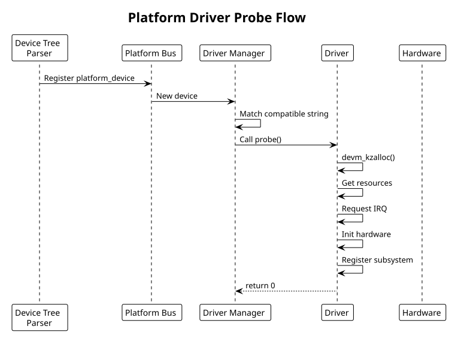

Platform Drivers
Table of Contents
Platform driver framework: device discovery, probe/remove lifecycle, device tree integration. Includes GPIO controller example.
1. Platform Driver Framework
Platform devices are discovered via device tree or platform data (rarely). Kernel matches devices with drivers via compatible string (DTS) or platform name (legacy).
Driver lifecycle:
- Device discovered (DTS parsing or explicit registration)
- Kernel searches for matching driver
- Driver's
probe()called - Driver initializes hardware, creates devices/files
- On device removal,
remove()called
2. Driver Registration
#include <linux/platform_device.h>
#include <linux/of.h>
#include <linux/of_device.h>
static const struct of_device_id my_gpio_dt_match[] = {
{ .compatible = "vendor,gpio-controller", .data = (void *)1 },
{ .compatible = "vendor,gpio-v2", .data = (void *)2 },
{ /* terminator */ },
};
MODULE_DEVICE_TABLE(of, my_gpio_dt_match);
static int my_gpio_probe(struct platform_device *pdev)
{
struct device *dev = &pdev->dev;
struct device_node *np = pdev->dev.of_node;
// ... probe logic
return 0;
}
static int my_gpio_remove(struct platform_device *pdev)
{
// ... cleanup
return 0;
}
static struct platform_driver my_gpio_driver = {
.driver = {
.name = "vendor-gpio",
.owner = THIS_MODULE,
.of_match_table = my_gpio_dt_match,
},
.probe = my_gpio_probe,
.remove = my_gpio_remove,
};
// Register driver
module_platform_driver(my_gpio_driver);
// Equivalent to:
// module_init(platform_driver_register(&my_gpio_driver));
// module_exit(platform_driver_unregister(&my_gpio_driver));
3. Probe Function
Probe runs when device is discovered. Must initialize hardware and export interfaces:
static int my_gpio_probe(struct platform_device *pdev)
{
struct device *dev = &pdev->dev;
struct device_node *np = dev->of_node;
struct my_gpio_dev *gpio_dev;
struct resource *res;
int irq, ret;
// Allocate device struct
gpio_dev = devm_kzalloc(dev, sizeof(*gpio_dev), GFP_KERNEL);
if (!gpio_dev)
return -ENOMEM;
// Extract base address from reg property
res = platform_get_resource(pdev, IORESOURCE_MEM, 0);
gpio_dev->base = devm_ioremap_resource(dev, res);
if (IS_ERR(gpio_dev->base))
return PTR_ERR(gpio_dev->base);
gpio_dev->phys = res->start;
gpio_dev->size = resource_size(res);
// Extract IRQ from interrupts property
irq = platform_get_irq(pdev, 0);
if (irq < 0) {
dev_err(dev, "failed to get IRQ\n");
return irq;
}
// Read DTS properties
u32 ngpios;
ret = of_property_read_u32(np, "ngpios", &ngpios);
if (ret < 0) {
dev_warn(dev, "ngpios not specified, using default\n");
ngpios = 32;
}
gpio_dev->ngpios = ngpios;
spin_lock_init(&gpio_dev->lock);
// Request IRQ
ret = devm_request_irq(dev, irq, my_gpio_isr, IRQF_SHARED,
dev_name(dev), gpio_dev);
if (ret < 0) {
dev_err(dev, "failed to request IRQ\n");
return ret;
}
// Register with GPIO subsystem
ret = my_gpio_register_gpiochip(gpio_dev);
if (ret < 0)
return ret;
// Store private data for later use
platform_set_drvdata(pdev, gpio_dev);
dev_info(dev, "GPIO controller registered: %u pins\n", ngpios);
return 0;
}
4. Remove Function
Clean up resources:
static int my_gpio_remove(struct platform_device *pdev)
{
struct my_gpio_dev *gpio_dev = platform_get_drvdata(pdev);
// Unregister GPIO chip
gpiochip_remove(&gpio_dev->chip);
// Unregister sysfs attributes (auto-cleanup if used devm_device_add_group)
// IRQ and memory freed automatically (devm_)
return 0;
}
5. Example: GPIO Controller Driver
Complete platform driver for GPIO controller:
// gpio_controller.c
#include <linux/module.h>
#include <linux/platform_device.h>
#include <linux/gpio/driver.h>
#include <linux/of.h>
#include <linux/of_device.h>
#include <linux/io.h>
#define GPIO_MAX_PINS 32
struct my_gpio_dev {
struct gpio_chip chip;
void __iomem *base;
spinlock_t lock;
int irq;
};
#define GPIO_DIR_REG 0x00 // direction: 0=output, 1=input
#define GPIO_DATA_REG 0x04 // data value
#define GPIO_IRQ_EN_REG 0x08 // interrupt enable
#define GPIO_IRQ_ST_REG 0x0c // interrupt status
// GPIO operations
static int my_gpio_get_direction(struct gpio_chip *chip, unsigned offset)
{
struct my_gpio_dev *dev = gpiochip_get_data(chip);
u32 dir = readl(dev->base + GPIO_DIR_REG);
return (dir >> offset) & 1; // 1=input, 0=output
}
static void my_gpio_set_direction_out(struct gpio_chip *chip, unsigned offset)
{
struct my_gpio_dev *dev = gpiochip_get_data(chip);
unsigned long flags;
u32 dir;
spin_lock_irqsave(&dev->lock, flags);
dir = readl(dev->base + GPIO_DIR_REG);
dir &= ~(1 << offset); // clear bit = output
writel(dir, dev->base + GPIO_DIR_REG);
spin_unlock_irqrestore(&dev->lock, flags);
}
static void my_gpio_set_direction_in(struct gpio_chip *chip, unsigned offset)
{
struct my_gpio_dev *dev = gpiochip_get_data(chip);
unsigned long flags;
u32 dir;
spin_lock_irqsave(&dev->lock, flags);
dir = readl(dev->base + GPIO_DIR_REG);
dir |= (1 << offset); // set bit = input
writel(dir, dev->base + GPIO_DIR_REG);
spin_unlock_irqrestore(&dev->lock, flags);
}
static int my_gpio_get(struct gpio_chip *chip, unsigned offset)
{
struct my_gpio_dev *dev = gpiochip_get_data(chip);
u32 val = readl(dev->base + GPIO_DATA_REG);
return (val >> offset) & 1;
}
static void my_gpio_set(struct gpio_chip *chip, unsigned offset, int val)
{
struct my_gpio_dev *dev = gpiochip_get_data(chip);
unsigned long flags;
u32 data;
spin_lock_irqsave(&dev->lock, flags);
data = readl(dev->base + GPIO_DATA_REG);
if (val)
data |= (1 << offset);
else
data &= ~(1 << offset);
writel(data, dev->base + GPIO_DATA_REG);
spin_unlock_irqrestore(&dev->lock, flags);
}
static const struct gpio_chip my_gpio_chip = {
.label = "vendor-gpio",
.owner = THIS_MODULE,
.get_direction = my_gpio_get_direction,
.direction_output = my_gpio_set_direction_out,
.direction_input = my_gpio_set_direction_in,
.get = my_gpio_get,
.set = my_gpio_set,
.base = -1, // dynamic allocation
.ngpio = GPIO_MAX_PINS,
.can_sleep = false,
};
// Interrupt handler
static irqreturn_t my_gpio_isr(int irq, void *dev_id)
{
struct my_gpio_dev *dev = dev_id;
u32 status = readl(dev->base + GPIO_IRQ_ST_REG);
if (!status)
return IRQ_NONE;
// Clear interrupts
writel(status, dev->base + GPIO_IRQ_ST_REG);
// Handle GPIO interrupts (for interrupt-capable GPIO)
generic_handle_irq(dev->irq);
return IRQ_HANDLED;
}
static const struct of_device_id my_gpio_dt_match[] = {
{ .compatible = "vendor,gpio-controller" },
{ },
};
MODULE_DEVICE_TABLE(of, my_gpio_dt_match);
static int my_gpio_probe(struct platform_device *pdev)
{
struct device *dev = &pdev->dev;
struct my_gpio_dev *gpio_dev;
struct resource *res;
int irq, ret;
gpio_dev = devm_kzalloc(dev, sizeof(*gpio_dev), GFP_KERNEL);
if (!gpio_dev)
return -ENOMEM;
res = platform_get_resource(pdev, IORESOURCE_MEM, 0);
gpio_dev->base = devm_ioremap_resource(dev, res);
if (IS_ERR(gpio_dev->base))
return PTR_ERR(gpio_dev->base);
irq = platform_get_irq(pdev, 0);
if (irq >= 0) {
gpio_dev->irq = irq;
ret = devm_request_irq(dev, irq, my_gpio_isr, IRQF_SHARED,
dev_name(dev), gpio_dev);
if (ret < 0)
dev_warn(dev, "failed to request IRQ\n");
}
spin_lock_init(&gpio_dev->lock);
// Register with GPIO framework
gpio_dev->chip = my_gpio_chip;
gpio_dev->chip.parent = dev;
ret = devm_gpiochip_add_data(dev, &gpio_dev->chip, gpio_dev);
if (ret < 0) {
dev_err(dev, "failed to register GPIO chip\n");
return ret;
}
platform_set_drvdata(pdev, gpio_dev);
dev_info(dev, "GPIO controller registered\n");
return 0;
}
static int my_gpio_remove(struct platform_device *pdev)
{
// Cleanup handled by devm
return 0;
}
static struct platform_driver my_gpio_driver = {
.driver = {
.name = "vendor-gpio",
.of_match_table = my_gpio_dt_match,
},
.probe = my_gpio_probe,
.remove = my_gpio_remove,
};
module_platform_driver(my_gpio_driver);
MODULE_LICENSE("GPL");
MODULE_AUTHOR("Your Name");
MODULE_DESCRIPTION("GPIO controller driver");
6. Device Tree Integration
gpio_controller: gpio@1000 {
compatible = "vendor,gpio-controller";
reg = <0x1000 0x100>;
ngpios = <32>;
interrupts = <42 0>;
#gpio-cells = <2>;
gpio-controller;
interrupt-controller;
#interrupt-cells = <2>;
};
// GPIO reference in other devices
led: led@2000 {
compatible = "vendor,led";
reg = <0x2000 0x10>;
gpios = <&gpio_controller 10 0>,
<&gpio_controller 11 0>;
};
7. Common Patterns
- Use
devm_*allocators (automatic cleanup on probe failure/removal) - Extract resources with
platform_get_resource(),platform_get_irq() - Read DTS properties with
of_property_read_*() - Use
container_of()andplatform_set_drvdata()for device association - Always return non-zero error codes on probe failure
- Subsystem registration (GPIO, I2C, SPI) handles most of the sysfs/device file creation
8. Platform Driver Probe Flow Diagram

9. See Also
- Device Tree (DTS) & Bindings
- Kernel Module Fundamentals
- Debugging Techniques
- Interrupt Handling —
platform_get_irq()and requesting the resulting IRQ - I2C & SPI Subsystem Drivers — same probe/remove model on a different bus
- Linux Boot Sequence — platform driver probe during boot